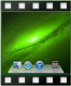

Camtasia project file (.cmproj)
Camtasia project file (.cmproj)
The Camtasia project file (.cmproj) saves a copy of the recording, library files, and edits completed within one file.

When you save a project, the "Create standalone project" option is enabled by default. This option includes all source files within a project to allow you to share the project with other Camtasia for Mac users.
Note: The Camtasia for Mac project file format (.cmproj) and the Camtasia Studio project file format (.camproj) are not compatible across platforms at this time.